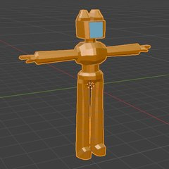
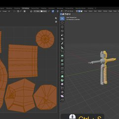
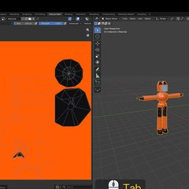

Blender: матеріали, UV-розгортка, текстура
Unity 3D · урок 7 «Текстури. UV-mapping. Матеріали» · Blender 5.2
Працюємо з котом-роботом з уроку 6: спершу даємо йому матеріали, потім розрізаємо швами й розгортаємо, а наприкінці малюємо текстуру прямо в Blender. Покроково з картинками — інструкція уроку.
1Матеріали
Матеріал — з чого «зроблений» об'єкт: колір, блиск, метал чи пластик, чи світиться. Щоб бачити матеріал наживо — Object Mode і Viewport Shading → Material Preview (кулька вгорі праворуч або Z).

| Параметр | Що робить |
|---|---|
| Base Color | основний колір |
| Metallic | металевий блиск (0 — пластик, 1 — метал) — для роботів |
| Roughness | грубість: 0 — гладкий, як дзеркало, 1 — матовий |
| Specular | сила відблиску (схоже на Metallic, але не те саме) |
| Subsurface | світло проходить крізь напівпрозоре (шкіра, віск) |
| Emission | об'єкт ніби світиться (Color + Strength) |
2Шви й UV-розгортка
UV-розгортка — модель, «розрізана» і розкладена на площині, як викрійка. На неї потім лягає картинка-текстура. Вкладка UV Editing: праворуч модель, ліворуч розгортка.

| Дія | Як |
|---|---|
| Шов | виділи ребра (Alt+ЛКМ — усе кільце) → ПКМ → Mark Seam |
| Прибрати шов | ПКМ → Clear Seam |
| Розгорнути | A → U → Unwrap |
| Щільніше розкласти шматки | у розгортці: UV → Pack Islands |
| Зберегти розгортку картинкою | UV → Export UV Layout (для GIMP / Photoshop) |
3Текстура в Blender
Малюємо прямо по моделі у вкладці Texture Paint. Перша текстура — проста: лише кольори.

| Що | Як |
|---|---|
| Нова текстура | Texture Slots → + → Base Color → ім'я, 1024 × 1024, колір → OK |
| Колір і розмір пензля | кольоровий прямокутник угорі; розмір — F і рух мишею |
| Фарбувати лише потрібне | кнопка-кубик Paint Mask; грані виділяй у Tab і повертайся в Texture Paint |
| Залити все одним кольором | інструмент Fill зліва |
| Зберегти малюнок | у розгортці: Image → Save As → robocat.png |
4Домашнє завдання
Для вчителя: файли для презентації
Кожен крок окремим відео — video/<вправа>-NN.mp4 (у Google Slides їх можна зупиняти): завантаж на Диск → Вставити → Відео → Google Диск.
Усі вправи підряд: lesson07-all.mp4. Цілі вправи: mat · uv · paint.
Модель — кіт з уроку 6 (blender/models/lesson06/robocat_p.blend); готові файли — blender/models/lesson07/ (mat, uv, paint і robocat.png). Джерело кроків: blender/lesson07/anim07.py. У презентації курсу текстуру малюють у графічному редакторі за експортованою розгорткою (Export UV Layout) — це теж працює, у гайді показано варіант повністю в Blender.